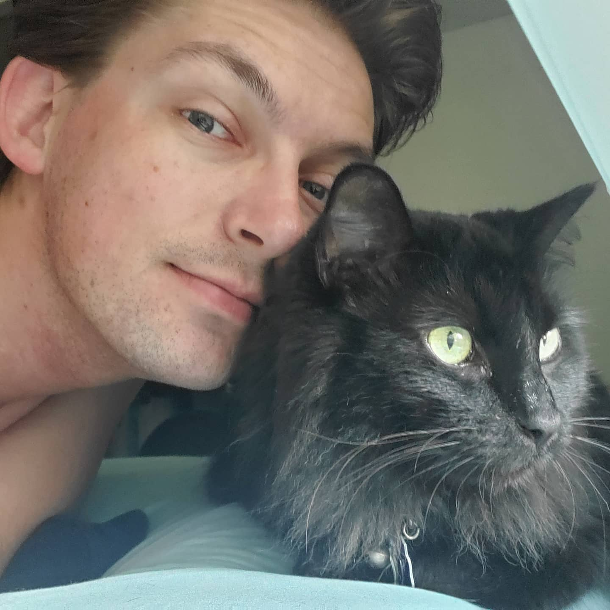
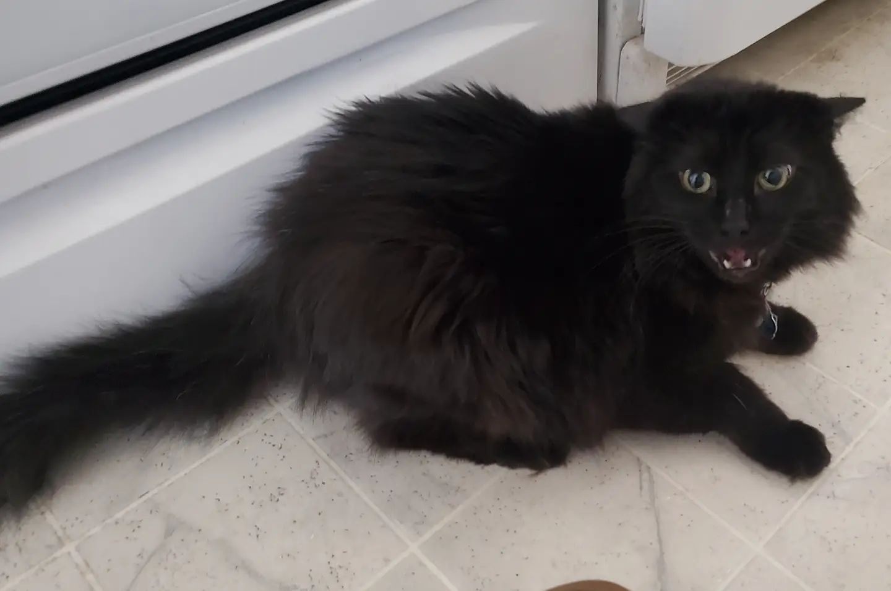
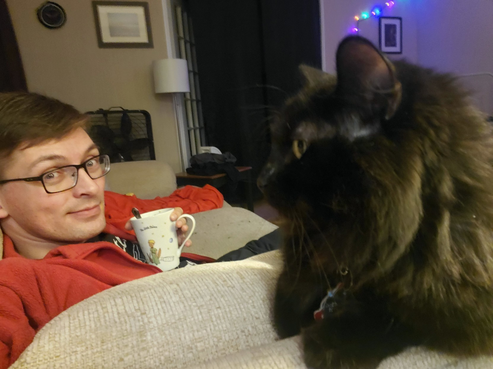

Shadow is an early 21st-century black house cat. I named him Shadow because he constantly got under my feet, because he's black, and because I listened to the Yeah Yeah Yeahs song "Little Shadow" while he was stuck in the tree outside my door. To this day I can't listen to that song without crying.
Shadow has taught me a lot of things: that it's okay to bite the shit out of people who touch you without permission, that I'm capable of taking care of another living being, and that my home can be a comfortable place where I enjoy being and not just somewhere I go to sleep.
Although he was pretty friendly to others as a newly-adopted teenager, he's gotten grumpy with age. He hates most humans, though he's inspirationally good at communicating his boundaries with hisses, swipes, and soft bites before escalating to bodily harm.
On my first night with Shadow, he fell asleep against my face and I felt calm in a way that I hadn't felt in years. When he sits against me and purrs (the loudest purr I've ever heard from any cat), I can feel anxiety leaving me like electricity going to ground.